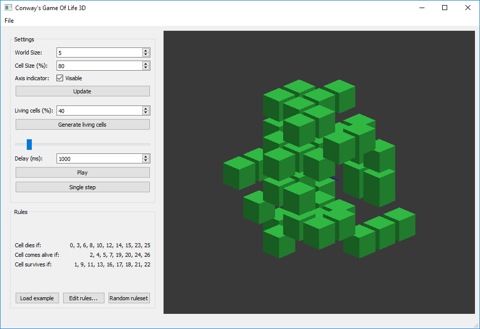
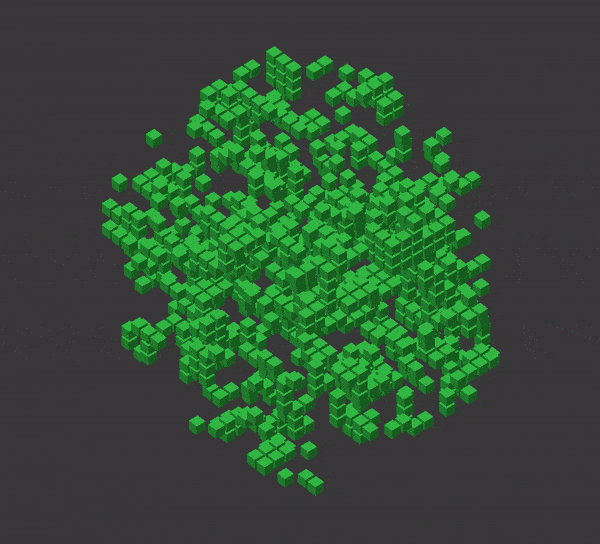

Diese Software überträgt das Konzept von Conway's Game of Life aus dem 2D in den 3D-Raum. Statt 8 Nachbaren hat eine Zelle nun 26. Die Welt hat kein Ende, da die Nachbaren der in der Darstellung unteren Zellen wieder die oberen Zellen sind usw.
Zum Erstellen einer Simulation sollte zuerst die Größe (Seitenlänge) der Welt festgelegt werden. Zur besseren Übersicht lässt sich die Rendergröße der einzelnen Würfel einstellen und ein Achsenindikator anzeigen. Die Ansicht kann mit der Maus gedreht werden. Zu Beginn einer Simulation sollten bereits einige Zellen leben (grüner Würfel). Mit dem Knopf "Generate living cells" werden entsprechend der gegebenen Wahrscheinlichkeit zufällige Zellen zum Leben erweckt. Unten in der Infoleiste wird kurz die ganue Anzahl angezeigt.
Um nun zu beinflussen, wie eine Zelle auf ihr Umfeld reagiert, müssen Regeln gestezt werden. Es gibt isngesamt 27 Fälle die eine Zelle antreffen kann: 0 lebenden Nachbaren bis 26 lebenden Nachbaren. Für jeden dieser Fälle wird festgelegt wie die Zelle reagiert:
- (X) Zelle stirbt
- (A) Zelle beginnt zu leben
- (S) Zelle bleibt tod/lebendig
Alternativ kann auch mit dem Knopf "Random ruleset" ein zufälliges Regelset erstellt werden.
Sind zufällige Zellen erstellt und die Regeln gesetzt kann mit dem Knopf "Single step" die Simulation Schritt für Schritt durchgeführt oder mit dem "Play/Pause"-Knopf und dem eingestellten Delay automatisch abgespielt werden.
Über das File-Menü kann die aktuelle Simulation als .GOL-Datei abgespeichert und zu einem späteren Zeitpunkt wieder geladen werden.
Beispielsimulation mit dem Ruleset: [X, A, X, X, X, X, X, X, X, X, X, X, X, X, X, X, X, X, X, X, X, X, X, X, X, X, X]
